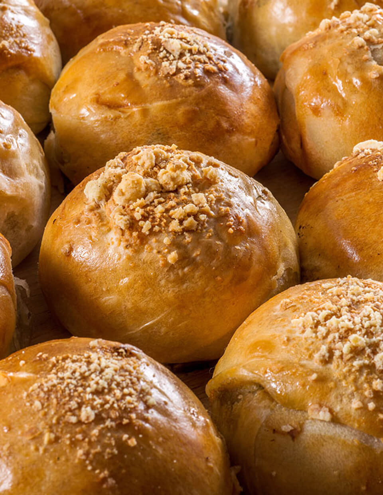
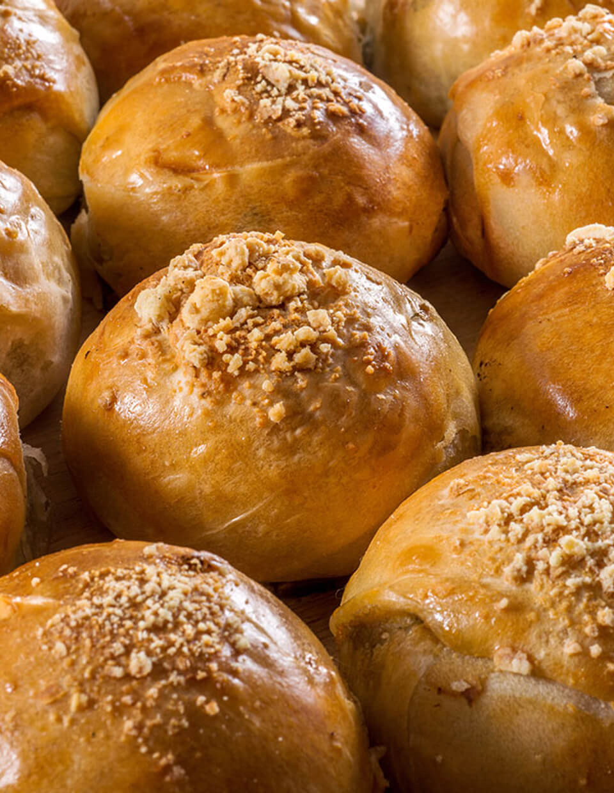

“Para que todas las abuelas y nietas del mundo, ya sea abrazándonos desde el cielo o no, tengan la oportunidad de disfrutarse compartiendo la vida juntas”
COCINANDO CON LA ABUELA LUCHA
Bienvenidx al tesoro culinario que solo nuestras abuelas conocen. Bienvenidxs a Cocinando con la Abuela Lucha.
“Para que todas las abuelas y nietas del mundo, ya sea abrazándonos desde el cielo o no, tengan la oportunidad de disfrutarse compartiendo la vida juntas”
Ver el libro
“El amor de nuestras abuelas, son abrazos que nos duran para toda la vida.”
Nuestros valores
Son aquellos en lo que creemos. Son especialmente las enseñanzas de nuestras abuelas y madres que ocupan un lugar muy especial en nuestro corazón.
Ver más
 

Las recetas de Luchi
Los sabores y olores forman parte de la vida de todos, son los que llevamos con nosotrxs a donde vayamos, son los que nos esperan cuando llegamos a casa o, mejor aún, los que hacen que lugares que no son nuestro hogar se sientan como tal.
Ver más


El komer i el rascar todo es empezar (“El comer y el rascar es solo cuestión de empezar”)